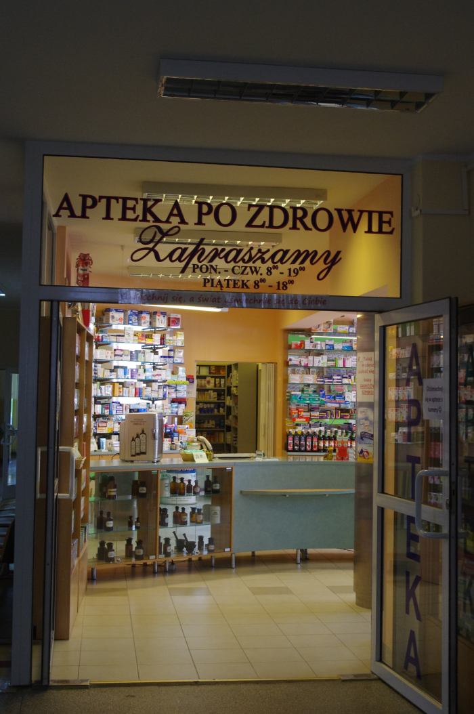

Apteki Dla Ciebie
Twoje Apteki w Gdańsku, Gdyni,
Żukowie i Pruszczu Gdańskim
"Pomóc Choremu w leczeniu lekiem"

DOJAZD
POWRÓT
Apteka Po Zdrowie
POZ Suchanino
Gdańsk, Otwarta 4
tel. 58 306 29 83
pon – czw: 8:00 – 19: 00
pt: 8:00 – 18: 00
DLA FARMACEUTY
KTO MA LEK
Agnieszka Kunicka © Wszelkie prawa zastrzezone